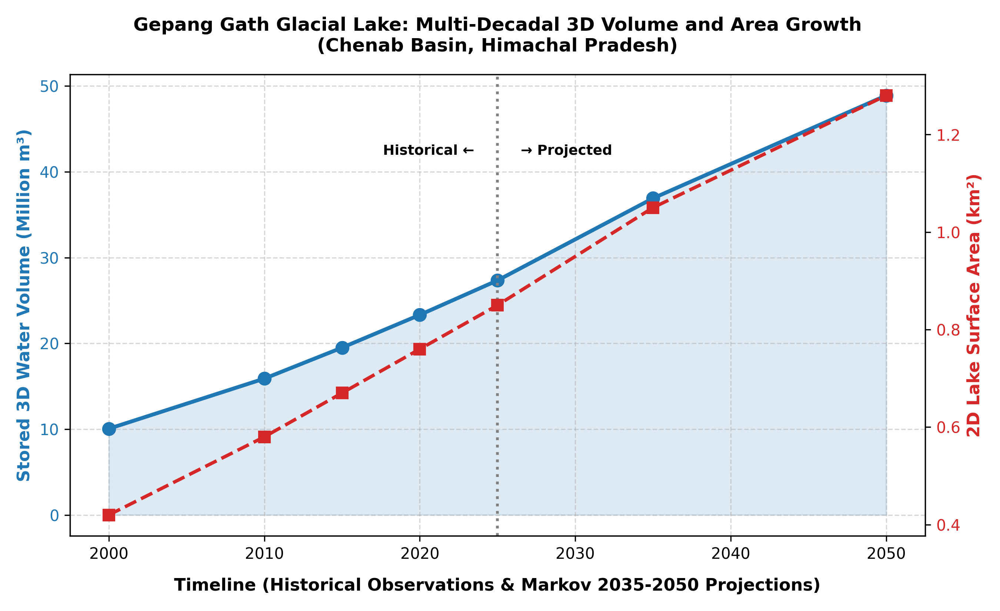
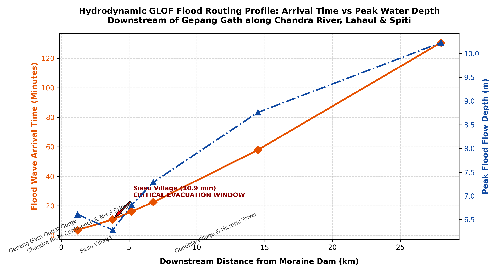
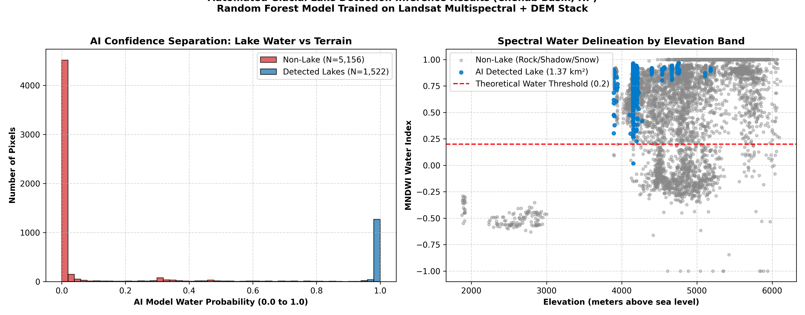
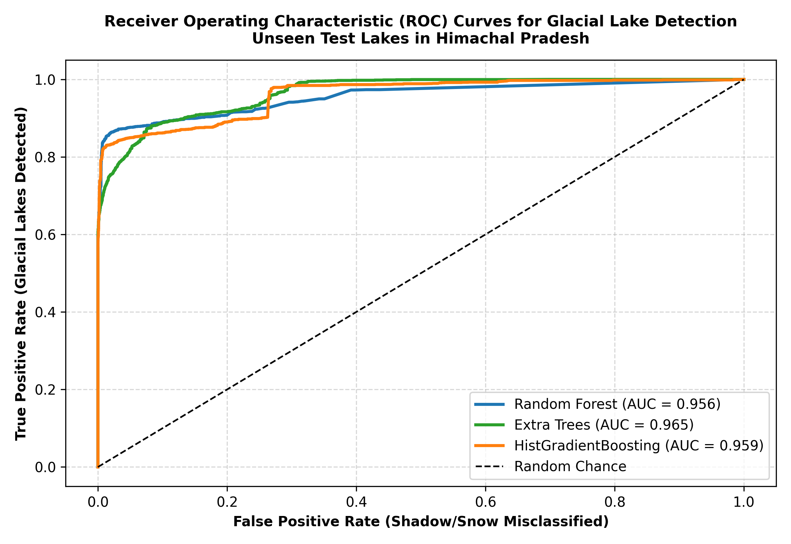
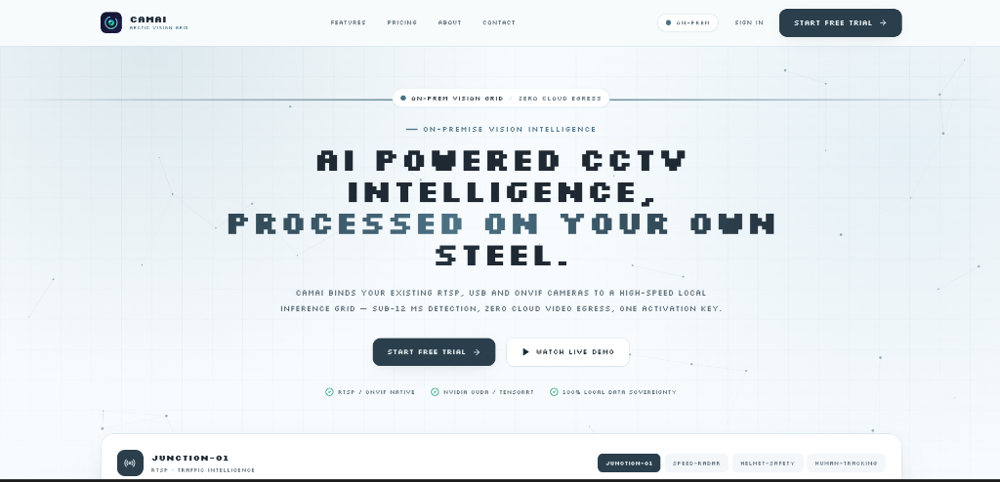

Scientific Figure View
Empirical GLOF Dissertation Output • University of Delhi
Quantitative geographer and spatial systems architect formulating multi-criteria analytical frameworks, processing satellite telemetry, and synthesizing edge AI systems to model climate vulnerability and terrain resilience.
Mastura Landslide Zone & Village Isolation Gravity Model
Rigorous geospatial inquiry integrating satellite remote sensing, multi-criteria decision mathematics, and physical ground-truthing to solve critical disaster and infrastructure challenges.
Prince (Lead Spatial Researcher) • Department of Geography, University of Delhi • Uttarakhand, India
Formulated a spatial gravity model evaluating village accessibility exposure across 3,419 rural settlements along the NH-7 arterial corridor within a 15 km buffer. Integrated ESA Copernicus GLO-30 DEM (slope gradient and elevation), OpenStreetMap friction surfaces, and Census demographics using an Analytic Hierarchy Process (AHP) multi-criteria framework:
Prince • Advising Faculty: Department of Geography, University of Delhi
Architecting an Earth Observation monitoring pipeline combining Sentinel-1 SAR backscatter (VV/VH polarizations) and Sentinel-2 multispectral imagery (NDWI/MNDWI indices) to track moraine-dammed glacial lake expansion in high-altitude catchments. Implementing deep learning segmentation to detect lake boundary fluctuations and predict sudden outburst flood risk.




Test Prince's Analytic Hierarchy Process (AHP) multi-criteria matrix live. Adjust weights below to evaluate how parameter shifts alter the calculated Community Isolation Index (CII) and vulnerability categorization.
From the steep scree slopes of Rudraprayag to the arid dunes of Jaisalmer and glacial catchments in Nepal: explore Prince's in-situ field research and spatial consulting deployments.
30.2858° N, 78.9822° E
Himalayan Landslide Mitigation along the NH-7 hazard corridor. Administered in-situ GPS spatial sampling and field assessments in Mastura to map road disruption exposure.
Operating with an architecture-first engineering philosophy: designing real-time vision pipelines, autonomous multi-agent spatial engines, and high-performance desktop GIS software.
Live Platform Deployment: camai.princesite.in
Designed and architected an end-to-end vision AI platform for intelligent edge surveillance, real-time multi-camera object tracking, and spatial telemetry. Orchestrated the high-throughput inference pipeline utilizing TensorRT FP16, ByteTrack Re-ID, and custom Python/FastAPI microservices connected to an Electron/TypeScript dashboard.

Developed a specialized AI assistant for QGIS Desktop using PyQGIS to automate natural-language GIS workflows, coordinate reprojections, and layer styling. Integrated multi-provider LLMs with direct OSM and DEM data retrieval.
Authored and integrated core plugin PR enabling regional selection, dataset query search, and automated layer ingestion for Indian geospatial datasets into the Tauri v2, React, TypeScript, and MapLibre stack.
Architected a proof-of-concept autonomous spatial AI system exploring multi-agent LLM swarms for geospatial ETL automation, coordinate re-projection, and raster algebra without manual script intervention.
Delivering techno-economic suitability modeling, 3D terrain analysis, and travel-time catchments for commercial infrastructure, climate-tech, and municipal healthcare clients.
Conducting 3D terrain and techno-economic suitability modeling for a decommissioning open-cast mine to repurpose degraded land into a utility-scale Solar PV park. Utilizing DEM slope/aspect masking (< 5° threshold), shadow analysis, and Global Horizontal Irradiance (GHI) modeling to calculate net installable Megawatt (MW) capacity and grid evacuation routing.
Executed Multi-Criteria Decision Making (MCDM) across 20+ geospatial layers (solar irradiance, grid substation proximity, slope stability, transmission corridor buffers, and land-use zoning) for utility-scale solar siting.
Modeled multi-modal travel-time isochrones and service-area catchments to identify spatial equity gaps and determine optimal locations for emergency medical facility placement across high-density urban corridors.
GIS Analyst (Remote): Processed multi-temporal satellite imagery to evaluate biomass carbon sequestration potential and land-cover dynamics for commercial climate-tech applications, standardizing spatial ETL workflows across siting projects.
Comprehensive synthesis across satellite earth observation, multi-criteria spatial analytics, edge AI architecture, and field research methodologies.
Core Quantitative Modules: Remote Sensing & GIS, Geostatistics, Cartography & Geovisualization, Environmental Geomorphology, Terrain Modeling, Quantitative Research Methodologies.
Conducted geological and road-network vulnerability field assessments along the NH-7 hazard corridor. Validated slope instability models and critical chokepoints against satellite data.
Administered GPS spatial sampling and field surveys to analyze rural demographic adaptation and groundwater vulnerability in arid Thar ecosystems.
Headed technical coordination, digital spatial exhibits, and visual conference communications for University Annual Geo Fests.
Supervising Faculty & Institutional Referees: Formal academic Letters of Recommendation (LoR) and institutional verifications from the Department of Geography, University of Delhi, available immediately upon request for graduate research admissions and fellowship committees.
Open to graduate research opportunities in geodata science, satellite earth observation, and cartography, as well as high-impact strategic consulting engagements.
Select a subject to pre-fill an inquiry directly to Prince's email client: